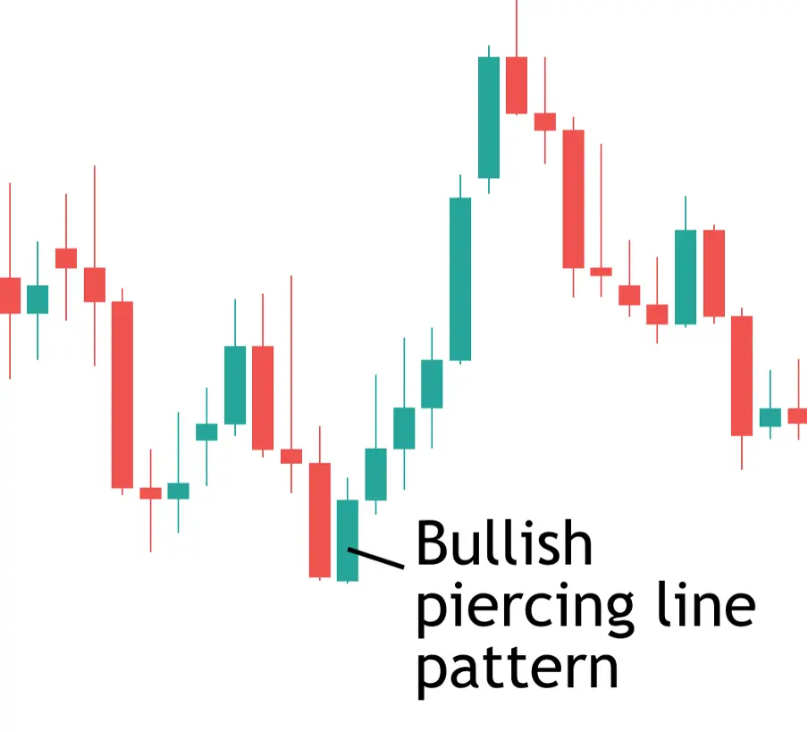

பொல்லாத பேர்சிங் முறைமை, பங்கு சந்தையில் கீழ்வரும் பாதிப்பை நிறுத்த,
உயர்வுநிலையை குறிக்கும் வணிகம் முறைமை. இந்த முறைமை இரண்டு மொழிகுகளில்
உருவாகின்றது. முதல் மொழிகு ஓர் கீழ்வரும் மொழிகு, இரண்டாம் மொழிகு ஓர் உயர்வு
மொழிகு, இது முதல் மொழிகுவின் உடலை முழுவதும் அணைக்கும் மற்றும் முதல் மொழிகுவின்
உயரத்தை மேலே செல்லும்.
பொல்லாத பேர்சிங் முறைமை ஒரு சக்திவாய்ந்த உயர்வுநிலையைக் குறிக்கும்.
இந்த முறைமையை கண்டால், பங்கு சந்தையில் உயர்வு நிலையில் வணிகம் செய்வது முடியும்.
